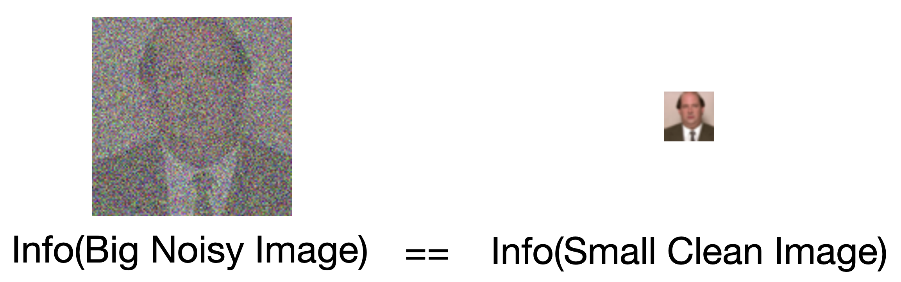
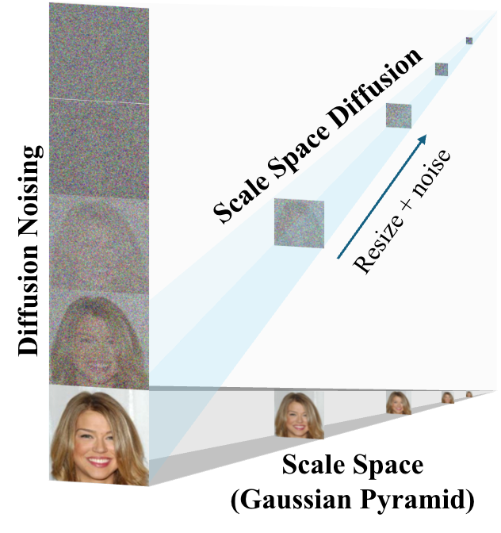
Left: Our proposed Scale Space Diffusion (SSD) fuses scale spaces into diffusion models. Along the y-axis, increasing diffusion noise removes fine facial details; along the x-axis, decreasing resolution in a Gaussian pyramid causes similar information loss. Right: Visualization of the inference process using SSD (Flexi-UNet, 6L).
Diffusion models degrade images through noise, and reversing this process reveals an information hierarchy across timesteps. Scale-space theory exhibits a similar hierarchy via low-pass filtering. We formalize this connection and show that highly noisy diffusion states contain no more information than small, downsampled images - raising the question of why they must be processed at full resolution. To address this, we fuse scale spaces into the diffusion process by formulating a family of diffusion models with generalized linear degradations and practical implementations. Using downsampling as the degradation yields our proposed Scale Space Diffusion. To support Scale Space Diffusion, we introduce Flexi-UNet, a UNet variant that performs resolution-preserving and resolution-increasing denoising using only the necessary parts of the network. We evaluate our framework on CelebA and ImageNet and analyze its scaling behavior across resolutions and network depths.
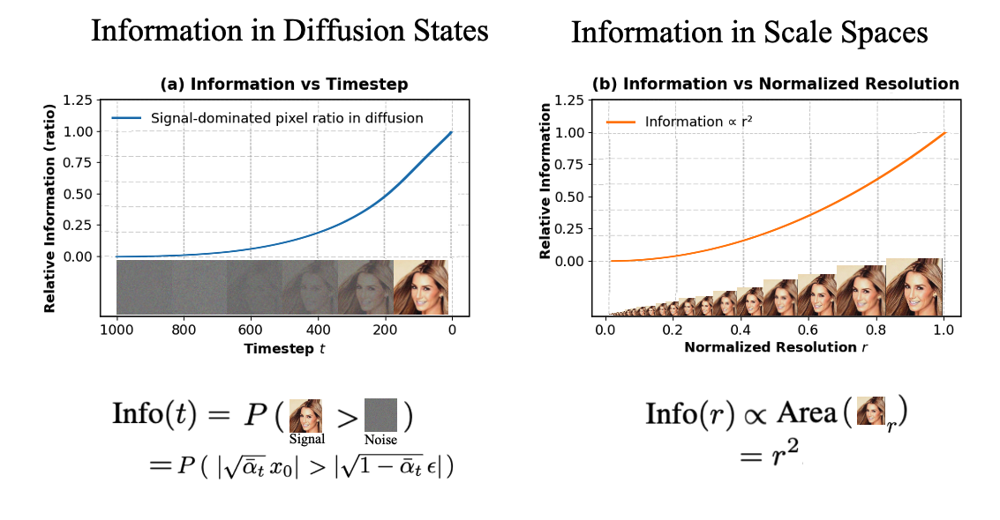
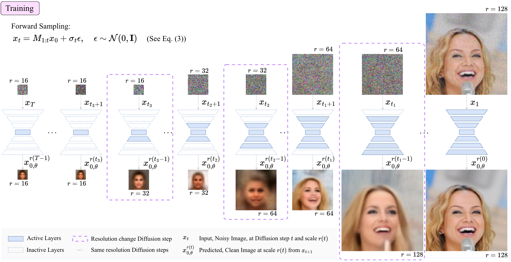
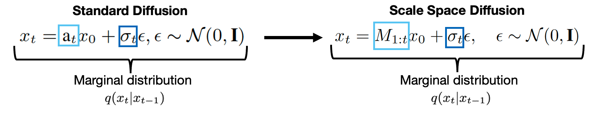
We map \(a_t\), a scalar value to a matrix based linear operator \(M_{1:t}\). \(M_{t}\) can be any linear operator, in this case we show \(M_{t}\) as a resize operator.
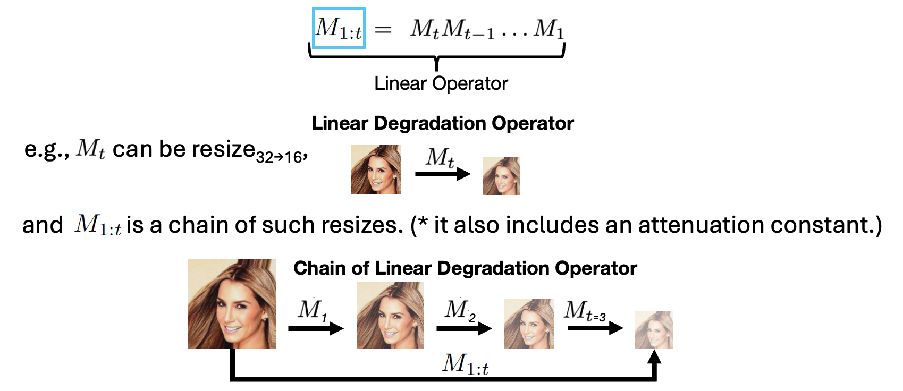
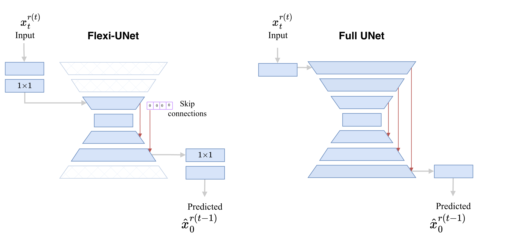
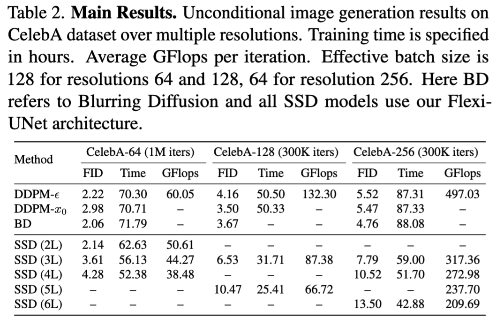
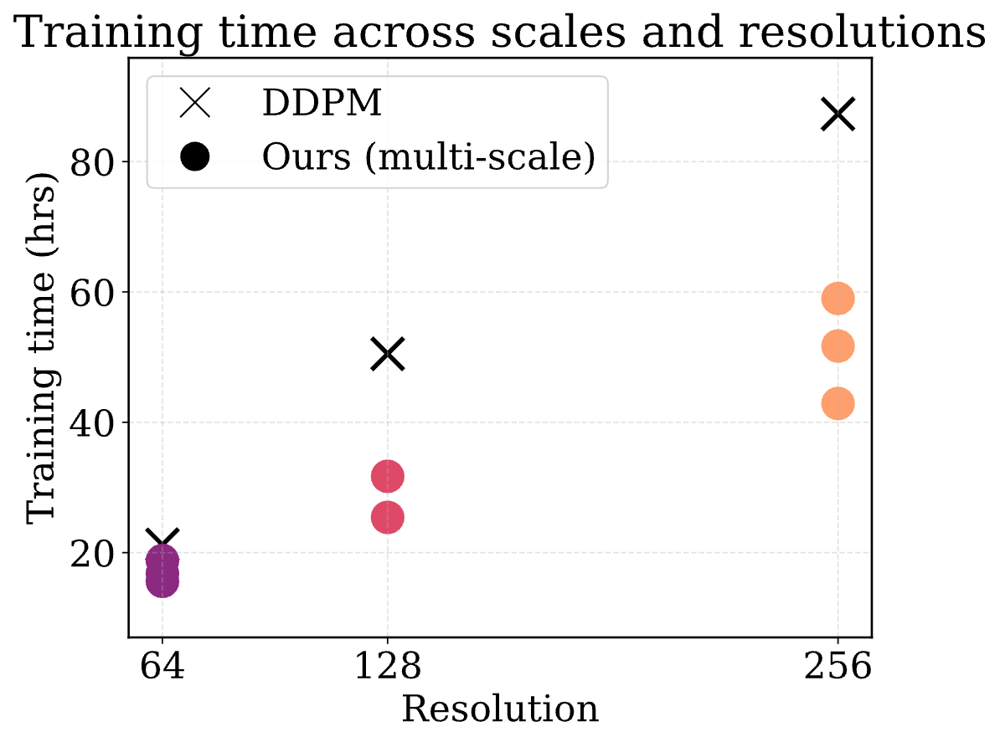
Left: DDPM-\(x_0\) is a special case of SSD: SSD(1L). The table shows that SSD can save substantial training compute while achieving comparable FID. Right: SSD achieves substantially lower training time, with efficiency gains increasing at higher resolutions and with more levels.
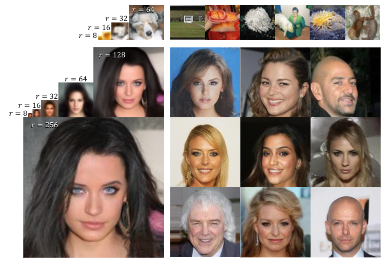
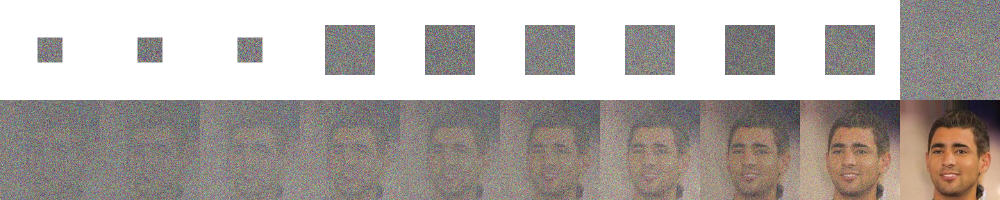
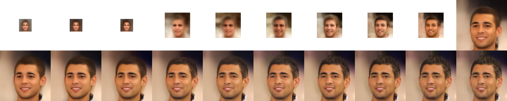
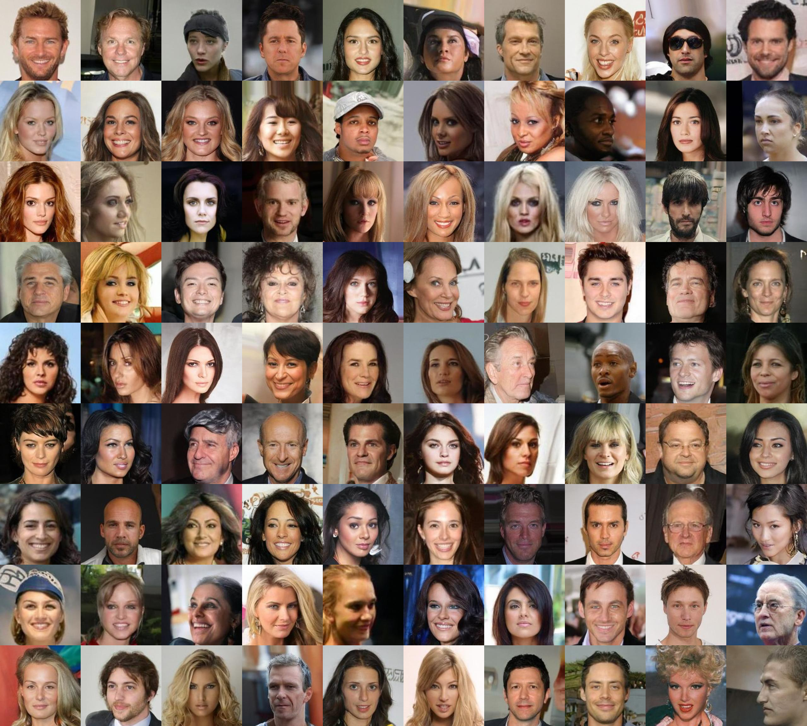
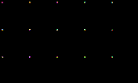